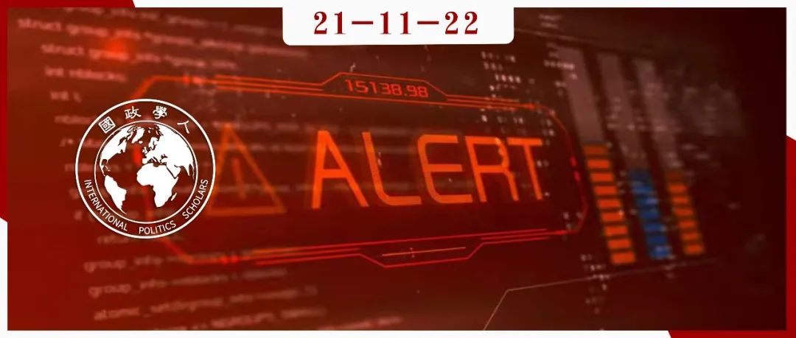

收录于合集 #《国际关系前沿》2021年第11期 18个

作品简介
作者： Joe Burton，新西兰怀卡托大学高级讲师，研究领域为网络安全和北约。George Christou，英国华威大学政治与国际研究专业教授，研究领域为欧盟网络安全政策，安全治理等。
编译： 胡富钦（国政学人编译员，南开大学周恩来政府管理学院国际关系系）
来源： Joe Burton, George Christou, Bridging the gap between cyberwar and cyberpeace, International Affairs , Volume 97, Issue 6, November 2021, Pages 1727–1747, https://doi.org/10.1093/ia/iiab172
归档： 《国际关系前沿》2021年第11期，总第38期。

内容摘要
在过去的二十年里，围绕网络战（cyber warfare）这一术语的概念性辩论一直在网络安全（cybersecurity）学科中占据主导地位。与此同时，人们对一个同样重要的问题给予的关注却不足：网络和平（cyber peace）是由什么构成的？本文基于和平与冲突、关键领域的去安全化等既有研究，为重塑网络安全的叙事方式提供建议，并将讨论的焦点从安全化和网络战争转移到更具学术性的去安全化和网络和平上。各国将网络安全置于国家安全叙事中，并无休止地进行网络备战，是一种恶性循环；而将之转变为网络和平的良性循环，不仅是可取的，而且是未来发展的必然结果。作者断言，如果想要减少网络空间的脆弱性和不安全感，推动信息和通信技术创新中以人为本的变革，上述转变就特别重要。
文章导读
01
引言
如今，各类国际行为体正在开发进攻性网络工具，将之用于各种战略目的，包括间谍活动、颠覆、胁迫和混合战争。随着“网络战”在军事和情报机构中得到越来越多的实践，相关文献也日益丰富，试图将其概念化，研究网络攻击的战略影响，并探索它们如何被用来实现军事和政治利益。与当代安全研究的其他领域一样，网络安全研究也一直被现实主义和战略研究方法所主导。 关于什么是网络和平（以及如何实现网络和平）的讨论却相对欠缺。本文旨在为改善这种不平衡做出贡献。
作者认为，网络战不仅仅是一种经验性的现实，而且是一种需要被挑战和解构的理念、隐喻和叙事方式。作者指出， 各国将网络安全置于国家安全叙事中，并无休止地进行网络备战，是一种恶性循环；而将之转变为网络和平的良性循环，既是可取的，也是必要的。
本文分三个主要部分。第一部分探讨了“网络战”的起源——其被用来描述在使用武力的情况下广泛的网络活动、对其误用造成的混乱以及网络空间安全化所造成的危害。该部分试图阐明对网络战讨论的缺陷。第二部分运用安全化理论作为解释网络战争叙事方式产生的一种手段，进一步揭示其非安全化的概念基础，批判性地讨论了当前网络空间非安全化的潜在路径。第三部分概述了如何使用与和平建设、冲突管理等相关的概念来重新界定学科术语和目标，并促进网络安全部分领域的非安全化，从而为网络安全的学术研究、政策制定提供一条不同的路径。
02
作为理念、叙事和隐喻的网络战
什么是“网络战争”？我们难以用传统战争的性质来界定现代网络战争。学术界对此也存在一定争论。但无论如何定义网络战争，对它作为一种经验现象的解释是相当有限的。结构性现实主义对国际关系的描述往往关注体系层次，在这一层次上，网络能力的出现是为了在一个无政府体系（和一个全球计算机网络）)内满足行为体的政治需求。就此而言，网络战争能力是现存地缘政治紧张局势和争端的自然延伸（和新媒介）。 一个大国对自身网络战争能力的建设和使用引发了其他国家的恐惧和不确定感，于是其他国家也增强了相应能力的建设。按照这个逻辑，网络战争是由安全困境引发的战略连锁反应。
对网络战争出现的大多数结构和体系层次解释都没有意识到网络战争出现的文化、历史和政治背景。正如理查德·阿什利（Richard Ashley）所言，冷战后的时代条件为安全的新叙事方式（本文中的网络战争）创造了条件，其中，政策界和学术界固有的不确定性发挥了重要作用。网络战争这一叙事方式便为看似无序的国际环境赋予了秩序和意义。 网络战争叙事是一种战略叙事——一种用来包装和框定安全问题以获取战略利益的修辞手段。 此外，国际关系学者也从中受益，因为在网络安全领域制造恐惧可以为其进行研究争取资金支持，也能通过媒体提高社会对此的关注。
在过去十年里，网络战争这一叙事方式的缺陷和危害已经显现。 在地缘政治层面，世界大国之间的关系紧张化，以规则为基础的国际秩序受到持续侵蚀。 已有证据表明，主要大国正将恶意软件安装到他国的关键基础设施中，以期在未来的网络战争中先发制人。 “网络战”也导致了网络安全的过度军事化。 在学术界，“网络战争”使得该领域的研究焦点 局限于威慑、攻防平衡等议题 ，造成了对该学科的路径依赖和对该学科其他方法的忽视。
03
从安全化到去安全化：通向网络和平的路径（及其局限）
如何才能超越网络战争的叙事方式，转而更加关注网络和平呢？ 对该领域的去安全化（Desecuritization）是必要的第一步。 作者强调了网络领域被安全化的原因和方式，以及扭转这一过程的理论和实践步骤。作为一个概念，安全化最早出现在哥本哈根学派（Copenhagen School）的著作中，他们认为， 安全化是安全问题出现的过程。
若要推动从安全化到去安全化的转变，必须更全面地思考如何改变现有安全化的话语和实践。
首先，如果安全化是一个涉及话语行为的过程，那么 话语本身就需要被认识，并有针对性地被去安全化和解构 。“网络战争”以及未涉及武力的冲突、间谍活动、颠覆活动、胁迫等活动，都需要被更精确地区分和使用。政策制定者和学者应该避免将这些现象混为一谈，并在进行政策制定和学术研究时更准确地使用它们。
“网络安全”这一术语本身也应该成为去安全化的目标 。在过去的二十年里，它已经嵌入大学院系、学位课程、政策档和国家网络安全战略中。但是，作为一个目标，随着21世纪的安全环境越发碎片化和全球化，“安全”似乎越来越难以实现。网络安全就是这种情况的一个很好的例子——在互联网的设计从根本上不利于安全的情况下，网络攻击难以被遏制。而软件开发过程也偏向网络安全产品的商业化供应，并以牺牲安全、信任和可靠性为代价，在竞争激烈的市场中保持低成本。在此情况下， 尽管“网络安全”一词是一个悖论，也很难停止使用“安全”一词来描述网络问题。
更需考虑的是，去安全化在规范上或政治上是否可取。去安全化的一种方法是，起初就把问题排除在安全领域之外。这种被称为 先发制人的去安全化形式 可以从现在开始实践，特别是在人工智能、5G、量子信息和物联网等一系列技术已经开始引发新的网络漏洞的情况下。虽然不可能使网络领域完全不被安全化，但可以 就新兴技术进行一场更不具争议性和夸张色彩的讨论 。这种先发制人的去安全化/再安全化方法也符合预防冲突的技术和原则，这些技术和原则长期以来就是和平与冲突研究方法的一部分。
当然，军方、媒体、工业界和学术界等是最初对安全化过程负责的行为体，他们支持安全化，上述转变可能会受到来自它们的政治挑战。而相反，支持去安全化过程的力量来自社会，但社会力量在塑造网络战略方面的影响力是有限的。
稳定、替换、重述和沉默化
除了话语的转变，网络领域的去安全化过程可能的状态和测量方式也值得探析。近期研究认为，去安全化涉及四个不同的过程。第一个过程涉及 稳定（Stabilization） ，网络稳定早已被列上国际网络政策议程，特别是通过全球网络稳定委员会(GCCS)等机构来实现。在传统安全领域，这一过程涉及的暴力更少。
第二个去安全化的过程涉及 替代（Replacement）——网络安全化将被其他政治问题的安全化所取代 。但这引出了一个问题：什么将取代网络安全化？在其他政策领域创造或默许新的安全化举措在道德上是可取的吗？替代网络安全化过程也将存在问题，因为网络技术并不处于成熟的高级阶段，而且还在不断发展。网络领域很难真正克服时间维度上的安全化，因为不同于其他领域的国际活动，网络领域中难以有明确终止冲突的期限。并且网络安全和其他安全领域互相交织，因此替代选项的可行性较低。
网络去安全化的第三种选择是 重述（Re-articulation），这涉及通过“积极为所涉的威胁提供政治解决方案”，将网络问题从安全领域移出 。此过程包括更根本地解决政治争端、公共领域的重大转变、超越敌友区别、网络安全行为者身份和利益的转变。重述的过程更利于逐步努力实现去安全化这一目标。
第四，网络去安全化可以通过 沉默化 （Silencing） 的过程来实现，沉默化是指 一个问题从安全话语中消失 。这可能需要积极地将网络领域排除在安全话语之外。对于那些认识到网络安全化的风险和危险的人来说，压制网络战和网络攻击的言论可能是政治议程上的一个积极项目，而且由于重述的过程，从长远来看可能是可行的。某些形式的沉默化可能涉及将一种话语同化为另一种话语。
04
冲突解决与和平研究：推动去安全化
超越去安全化的机制，则需思考：网络和平会如何？其核心特征是什么？为了回答这些问题，本部分探讨了网络和平的一些基础条件，以及如何利用现有实践重新确定网络学科的术语和目标。
学者和政策制定者不乏对网络和平的兴趣，现在已经有不少致力于和平利用网络空间的智囊团、非政府组织、政策机构和行业倡议。但关于网络和平本身的学术和概念争论并没有受到同样程度的重视，原因在于， 既有文献中对“网络和平”的概念缺乏共识 。
那么，如何利用网络和平的概念和以人为本的方法来促进重述和更好地理解并实现网络和平呢？冲突解决领域的哪些工具可以被用来促进这一过程？它们又有何局限？
某些学者指出， 必须在技术和信息层面来实现网络和平，同时认为目前的趋势不利于实现消极的网络和平 。即从技术角度看，信息和通信技术创新呈指数级增长，发展网络攻击性而不是防御性能力的国家数量增加，以及实施网络攻击和/或间谍活动的不对称激励结构。对网络持主权观和自由观的不同国家，对管理网络行为所需规范的政治解释存在差异，导致这些差异在联合国层面的竞争过程中被制度化。一些学者认为，网络规范过程的某些不足是可解决的，至少可以达到消极和平的状态；而另一些学者则认为，可以通过泛信息学方法、多中心治理以及从积极和平和以人为本的途径重新审视网络安全，从而实现积极和平。
关于人类安全和积极和平的进一步争论也基于对网络安全的重新构想和重述，以便将关注重点从国家转移到个人和社会群体。此外， 将问题框定为网络不安全和消极和平（即没有网络攻击）并不能让我们远离零和博弈 。网络安全不可避免地成为国家的责任，越是追求网络安全，网络空间和现实世界就越不安全。因此，我们陷入了这一框架内的恶性循环——各国不断为网络战争备战，而安全方面主观上的相对收益意味着网络空间生态系统的绝对损失。
转变参照对象——人和多中心治理
在这一背景下， 有必要对安全的参照对象进行重述，将重点从国家转移到个人 。有研究指出，有两个重要的步骤：首先，要对网络战争中的暴力行为形成更精确的概念——通过网络手段对个人施加的暴力的维度（心理和生理的，消极影响和积极影响，直接/个人和间接/结构性的，有意的和无意的）。第二，以人为本，则各国防御网络威胁的尝试都可得到基于权利框架的支持。由此，将人放在安全考虑的前沿和中心，能够促成一条建立联系的自下而上途径，任何好处都不限于少数几个或强大的实体。这种方法的最终结果是对网络安全进行了更加灵活、层次分明的概念化，一端是网络不安全和网络战争，另一端是（积极的）网络和平状态。
这种以自下而上、积极和平和以人为本的方式重新概念化的网络安全，其产生的问题在于它会形成何种类型的治理，因为常有国家试图减少新的安全设施，以保护其国家安全利益。但这并非否认自上而下甚至多中心方式的作用，如果我们要摆脱网络安全叙事和治理框架，那么这些方式是不够的，因为国家和各国制定的国际法会轻易地强化网络空间的自卫（战争）权利。
安全与和平——实践和路径
那么，在重述和实现积极的网络和平方面，关于和平建设和冲突解决的研究能在多大程度上提供借鉴？如何才能为积极的网络和平创造条件？一些学者认为， 可以思考如何利用其他传统冲突的预防和解决方法 ，以促使“网络安全文化”向和平转变。其中，预防性外交能够促使行为体之间建立信任。最后，其他学者关注如何将谈判用作解决交互式冲突的方式，以及我们如何根据当代冲突的跨国性质，通过世界性的冲突解决方式重新定义冲突解决实践。
05
结论
如果要减少信息和通信技术发展过程中的脆弱性和不安全感，从网络战争的恶性循环转向积极的网络和平的良性循环是可取和必要的。首先，各利益攸关方在 使用与网络“攻击”和“战争”相关的语言时必须更加精确 ，这样才不会引发恐惧和不安全感，甚至加剧网络空间的网络“安全困境”。第二，必须 重新定位网络空间治理的方式 。国家无疑仍将是国际网络空间生态系统中的主要参与者，但将和平和以权利为基础的价值观置于技术发展的前沿和中心，并从根源上解决问题的分散化、层次化的做法，将优先考虑个人在网络空间的各种需求，而不是国家安全利益。
由于国家和非国家行为体在当前叙事中存在既得利益，所以，任何对现有网络战争叙事的“重述”、甚至“沉默化”的行为都会遭到抵制，而且“替换”并非可行的选项，但如果想要避免网络和平消极形式的固有危险，光有“稳定”是不够的。为此，作者建议， 通过调解、谈判、预防性外交等预防和解决冲突的现有方法，对网络空间加以重述，以重构现有的网络叙事，并对未来新技术的安全化采取先发制人的措施。 此外，用一种 以人为本的做法取代国家和国家安全利益的优先级 ，将最终创建共同的网络安全文化和可持续(积极)的网络和平。
译者评述
在国际关系视阈下，网络安全的既有理论视角主要有网络安全威胁忧虑论、网络空间效用怀疑论和网络安全话语建构论，是国际关系三大主流理论对网络安全的理论主张。它们对网络安全的概念莫衷一是，但在论及网络安全时，大都围绕“威胁”、“冲突”、“战争”等概念。“战争”与“和平”是国际关系永恒的主题，亦是国际安全的两种状态。在论及网络安全时，“网络战争”往往是争论和研究的重点，对“网络和平”的研究却相对缺乏。
随着技术发展和应用，“网络战争”逐渐成为网络安全领域的争论和研究热点。本文作者试图反其道而行之，对“网络和平”进行研究。此外，作者认为，将网络安全直接置于国家安全叙事之中，将不可避免地增强网络空间领域的不安全感。因此，作者试图重塑网络安全的叙事方式，将网络安全议题去安全化，将争论引向当前尚有待深入研究的网络和平方向。
这项研究无疑具有开创性和启发性。其开创性在于，作者将“网络和平”引入网络安全研究，丰富了该学科的研究视角，为网络安全概念的争论提供新思路。其启发性在于，对于海洋、核、空间、海洋和大气等其他新兴安全领域的研究，亦可从“去安全化”和“和平”的视角切入。
参考文献
刘杨钺.国际政治中的网络安全:理论视角与观点争鸣[J].外交评论(外交学院学报),2015,32(05):117-138.
词汇整理
网络安全 Cybersecurity
网络战 Cyber war/warfare
网络和平 Cyber peace
去安全化 Desecuritization
哥本哈根学派 Copenhagen School
全球网络稳定委员会 Global Commission for Cyber Stability (GCCS)
责编 | 陈想 林怡娉
排版 | 陆霜滢 游钜家
文章观点不代表本平台观点，本平台评译分享的文章均出于专业学习之用, 不以任何盈利为目的，内容主要呈现对原文的介绍，原文内容请通过各高校购买的数据库自行下载。

国政学人
支持学术公益与知识传播
微信扫一扫赞赏作者 __赞赏
已喜欢，对作者说句悄悄话
取消 __
发送给作者
发送
最多40字，当前共字
上一页 1/3 下一页
长按二维码向我转账
支持学术公益与知识传播
受苹果公司新规定影响，微信 iOS 版的赞赏功能被关闭，可通过二维码转账支持公众号。